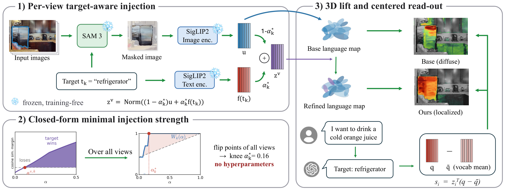

Paper Analysis
01 · A Queryable Map Can Still Miss Its Target
语言地图通常把区域视觉特征提升到三维，再用文本相似度查找物体。但正确区域的视觉向量未必最接近其类别词：周边上下文可能占主导，导致热图合理却峰值位置错误。本文针对一个已建语言地图和额外给定的小目标词表，提高指定目标的可检索性。
方法不是给所有物体换成类别 one-hot，也不重新训练重建骨干。它在历史训练视图中找到目标区域，把视觉向量向目标文本轻推，再重新提升到固定几何上。当前流程需要多视图统计；作者把在线扩展列为后续方向。
需要区分两个评价维度：固定三维位置，对不同类别排名，是分割；固定一个查询，对不同空间位置排名，是定位。一个变换可能不影响前者，却彻底改变后者。
Paper Analysis
02 · Where the Semantic Prior Enters

Sibaek Lee et al. · Original figure, unmodified · Paper distributed under the arXiv non-exclusive license; limited reproduction for scholarly commentary, not a CC license · Paper & Caption ↗
Figure 2 上方先用 SAM2 自动 mask 和 SigLIP2 视觉编码构建通用基底；对指定目标词，再用 SAM3 的文本提示定位对应区域，提取区域向量 u，并用配对文本编码器获得目标锚 f(t_k)。两者必须属于同一嵌入空间，不能混用不同教师的视觉与文本特征。
目标区域内使用 z=Norm((1−α)u+αf(t_k))。α=0 保留该区域视觉特征，α=1 完全替换为类别文字。重叠目标按较小 mask 优先处理，非目标二维区域保持原特征。更新后的特征图经闭式 feature splatting 提升到已冻结的高斯几何。
“非目标区域不变”首先是二维构造的性质。三维提升中若不同区域对同一个高斯有贡献，其最终向量仍可能受注入影响；类别之间的竞争也会变化。因此不能从局部不修改直接推导所有未注入类别的指标完全不下降。
这里没有新增训练 loss，也没有语义梯度更新高斯中心。语义确实进入地图的语言特征，但不是进入可学习流式 memory 的写入状态。
z^(v,k)(alpha) = normalize((1-alpha) u^(v,k) + alpha f(t_k)) alpha = 0: regional visual feature alpha = 1: class-text replacement Lift refined per-view features onto frozen geometry.
Paper Analysis
03 · Deriving the Per-View Flip Point
设 κ=u·f(t_k) 是区域与目标相似度，β_j=u·f(t_j) 是与竞争词相似度，γ_j=f(t_k)·f(t_j) 是两个文本锚的相似度。比较同一混合向量对两个词的 cosine 时，归一化分母相同，可消掉，从而把排名条件化成 α 的线性不等式。
当 β_j>κ、目标原先落后且文本锚不完全相同时，超过竞争者的边界为 (β_j−κ)/(β_j−κ+1−γ_j)。若目标已经领先，该竞争者不要求注入，临界值应为零。对所有竞争者取最大值，才满足这一视图的全部比较。
教学例子：κ=0.20，β=0.30，γ=0.50，临界系数为 0.10/0.60≈0.167。该点只是并列边界，不是有显著余量的正确识别保证；几何投影、mask 错误与后续多视图混合都不包含在这条不等式中。
原文把比式与 clip 写在一起。实现时仍需显式处理目标已领先、相同文本锚和零分母；对已经满足的不等式盲目套用比值再裁剪，可能产生错误边界。这里给出的是按原不等式推导的分支解释，并非已验证的官方实现。
(1-alpha) kappa + alpha >= (1-alpha) beta_j + alpha gamma_j If beta_j > kappa and gamma_j < 1: a_j = (beta_j-kappa) / (beta_j-kappa + 1-gamma_j) If the target already wins against j: a_j = 0 a^(v,k) = max_j a_j
Paper Analysis
04 · One Strength per Target, Not a Guarantee for Every View
每个检测视图有自己的临界系数，但方法最终为一个目标采用跨视图共享强度。作者按目标 mask 面积加权，统计 α 下已越过边界的检测面积比例 W_k(α)，取该曲线高于端点连线最多的位置作为 knee。
这个选择在捕获更多区域和避免覆盖视觉信息之间折中，可能故意不恢复最难视图。它不同于取所有视图临界值的最大值，也不是保证所有三维位置分类正确的全局最小系数。论文所谓 closed-form 的严格部分是单视图边界；跨视图运行点还采用了规定的 knee 准则。
大 mask 对曲线贡献更大，远距离的小目标观测影响较小。若 SAM3 未检测到目标，注入根本没有候选可用；若 mask 错误，文字先验可能强化错误。这些限制不会因 α 没有手工调参而消失。
总体流程仍含分割模型、目标词选择、掩码优先级和后续聚类参数。更准确的说法是无需逐场景搜索注入系数，而不是系统完全没有超参数。
W_k(alpha) = sum_v Area_(v,k) * [a^(v,k) <= alpha] / sum_v Area_(v,k) alpha_k* = argmax_alpha (W_k(alpha) - chord_k(alpha)) Typical reported mean alpha*: Replica 0.17 / ScanNet 0.12 / HM3D 0.14
Paper Analysis
05 · Why Raw Cosine Retrieval Breaks
不同文本嵌入带有共同方向。把文本注入某些三维特征，会让它们对许多查询一起变得相似，导致不同词都偏向同一批被注入区域。论文报告跨查询相似度相关性从 0.28 升到 0.98，说明类别内提升并不自动带来空间定位能力。
读取时用 q−q̄ 代替 q，其中 q̄ 是词表的平均文本向量；分数等于原相似度减去该高斯对整个词表的平均响应。对固定高斯，减去项对所有类相同，故类别 argmax 不变；对固定查询，不同高斯的减去项不同，空间排名会改变。这个结论针对原式的未额外归一化点积，不能随意改成每个中心化词再归一化的 cosine。
然后保留高分高斯、以 DBSCAN 聚类，并按正分数平方的总质量排序，返回加权中心。论文中心化读取保留 4% 高斯，原始读取保留 0.5%，聚类半径均为 0.3m，最多五个候选。raw 与 centered 对照因此包含不同保留比例；不能称为只修改减均值一行的完全隔离实验。
在相同 centered 配置下比较 base 与 refined 更能隔离特征修正本身的贡献。中心化只改变读取，不修改存储特征或几何。
q_bar = mean_(w in vocabulary) f(w) s_i = z_i^T (q - q_bar) w_i = max(s_i, 0)^2 goal_cluster = sum_(i in cluster) w_i x_i / sum_(i in cluster) w_i
Paper Analysis
06 · Gains, Trade-offs, and Evaluation Vocabulary
实验包含 8 个 Replica、10 个 ScanNet 和 4 个 HM3D-Sem 场景。前两者为 RGB 几何，HM3D 用深度初始化，不能统称为 RGB-only。主分割实验把每场景已标注类别同时用于目标词和评价词；HM3D 仅保留覆盖至少 0.5% 标注像素的常见类别。其大幅提升是指定目标设置下的结果，不等于任意未见查询都提升。
自身 base 的 Replica mIoU 从 0.207 到 0.436，ScanNet 从 0.355 到 0.542，HM3D 从 0.144 到 0.231。不过固定 α=1 的类别分割分数更高，分别为 0.471、0.560、0.262；自适应方法的理由是少破坏外观与未注入类别，而非在这张表上单纯最高。
每场景类别随机各分一半作为注入目标与 held-out，并用完整类别集合评价时，自适应方案的跨数据集平均 held-out mAcc 从 0.384 降到 0.348，相对下降 9.4%；硬粘贴则到 0.301，下降 21.6%。这说明它缓解了损害，却没有无损保留开放词汇泛化。
实例分析以 room0 的九个靠垫为例：硬粘贴使实例向量平均两两 cosine 达 0.999，颜色属性几乎无法区分；自适应为 0.883，接近 base 的 0.873，且在该示例中把两个蓝色靠垫排到前二。这是有解释力的个例，但不是大规模属性泛化基准。
目标定位共 175 个查询，候选距同类别任一 GT 实例 1m 内算命中。下表 aggregate top-1 表明注入配合原始读取反而下降；centered base 到 centered refined 的提升为 10.3 个百分点。命中半径较宽且使用已知地图与最短路径，不能直接当作未知环境探索成功率。
| Field Map / Read-out | Aggregate Top-1 (%) |
|---|---|
| Base / raw | 50.3 |
| Base / centered | 53.7 |
| Refined / raw | 23.4 |
| Refined / centered | 64.0 |
Paper Analysis
07 · What Does Not Improve, and What Is Reproducible
“可作为插件”不代表所有地图所有数据都受益。Replica 上 HOV-SG top-1 从 14.3% 降到 12.5%，ConceptGraphs 从 10.7% 降到 8.9%；作者指出若对象级地图根本没有建立小物体实例，改已有区域特征不能补造缺失实例。其跨数据集汇总提升需要与这些反例一起阅读。
实机使用 LiDAR-inertial SLAM 估计位姿，LiDAR 地图支持定位和二维占据栅格规划，语言地图提供目标。论文报告 78% 对 22% 成功率，但正文未充分给出重复次数等细节；不能把展示理解为完全由 RGB 语言地图独立完成导航。
官方仓库截至阅读日明确写着代码将稍后发布，当前只有文档等内容。因此边界系数、knee 并列情况和再提升流程尚不能用发布代码完整核验；本笔记依据论文推导，不报告复现结果。
Paper Analysis
08 · Lessons for Semantic Fusion into Memory
它给写入前语义融合的具体启发是：注入强度应受原视觉信息保护约束，且读出方式需要与注入后的特征分布相匹配。仅看到语义分类提高，无法排除类别文字压过外观细节、实例差异和几何对应线索。
但它的混合发生在图文共同空间，可直接比较文本锚；LingBot-Map 的隐藏特征未必在该空间，α 的闭式解不能直接移植到主干 token。可先在语义分支中保留视觉残差，再用可训练投影影响 memory，最终以几何损失验证，而不是把分类 margin 当作几何价值。
与 OV-Foam 合读可以形成两级诊断：注入前检查二维区域是否可辨识，提升或压缩后检查不同区域是否混入同一存储单元。前者是表征校准，后者是证据分配；这两篇均未证明语义改善了流式几何，适合作为机制与对照设计的依据。
Discussion
Reading Questions
Does the adaptive coefficient win on every view?
不是。单视图有临界点，实际按跨视图捕获曲线 knee 选一个共享系数，允许部分难视图不被恢复。
Does centering change semantic class argmax?
按论文未归一化点积形式，同一高斯对各类减去相同项，类别 argmax 不变；固定查询的空间排名会变。
Are non-target queries preserved without loss?
没有。held-out 结果仍下降，只是比强注入损害更小；二维非目标区域不改不等于下游指标不变。
Can these experiments prove better geometry?
不能。几何冻结，提升的是语义分割与目标检索；对重建的价值需要另设反馈路径和几何对照。
References
Paper results refer to version 1. Materials checked on October 29, 2026. Reported experiments were not independently reproduced.
Verified on 2026-10-29. Paper results refer to the linked versions. Repository references were checked on this date.